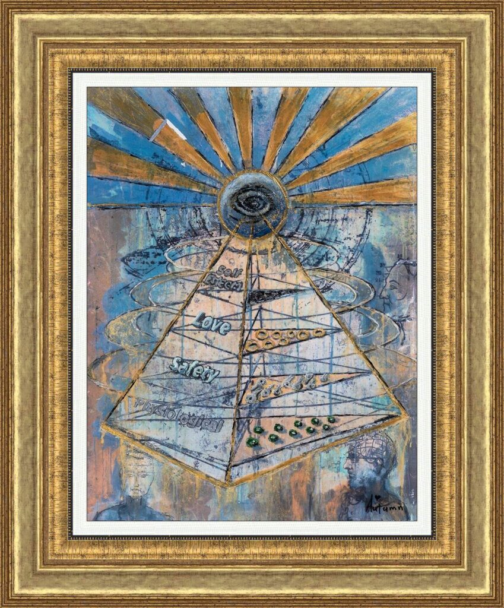

Maslow’s Heirarchy

Description:
In “Maslow’s Hierarchy,” artistic prodigy Autumn de Forest bridges the gap between fine art and psychology, offering a profound visual critique of Abraham Maslow’s famous theory of human motivation. While the traditional pyramid suggests that one must satisfy basic needs like safety and food before reaching the pinnacle of creativity, de Forest challenges this rigid structure.
The artwork features a striking, diagrammatic pyramid superimposed over a contemplative profile, symbolizing the internal architecture of the human mind. At the apex sits a watchful eye, representing “Self-Actualization”—the desire to become the most that one can be. However, unlike the textbook model, de Forest’s interpretation suggests a “Swiss cheese” reality: she believes that artists and visionaries can often reach the height of self-actualization even if the lower levels of safety or belonging have “holes” in them.
Using her signature mixed-media techniques, the piece combines graphic text with textured, painterly backgrounds in cool blues and warm ochres. The “rays” extending from the top eye suggest that once self-actualization is reached, it illuminates everything below it, turning the hierarchy from a climb into a source of light. This is a thinking person’s painting, perfect for those who value the intersection of intellect and emotion.
Artwork Details:
- Medium: Mixed Media / Acrylic on Canvas (Archives may vary)
- Style: Conceptual Surrealism / Psychological Pop
- Key Elements: The Pyramid of Needs, “All-Seeing Eye,” faint portrait profiles, text overlays
- Signature: Hand-signed by the artist (Bottom Right)
- Dimensions
- 26 ¾ in x 20 ¼ in
- Reg. / Lot No.
- 889101.0048